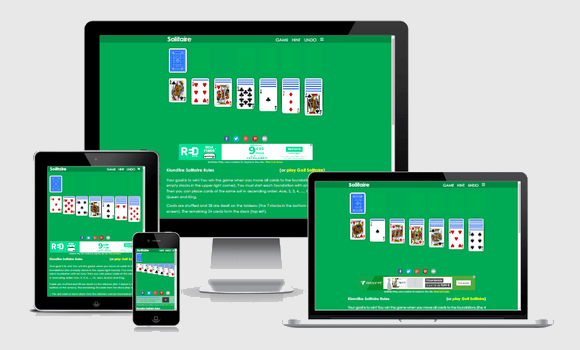

Hello, I am Michel and I created Solitaire-Play. Twenty years ago, I had already written a few games with Visual Basic 3. The first was Golf, because it's a solitaire card game with no drag & drop to manage. Today, with HTML and Javascript I should be able to do it again!
This time, I choose to code a Klondike Solitaire game, because it's probably the best known solitaire in the world. Thus, everyone should know its rules and can start to play immediately for free...

For fun (and because I'm used to it), I tried to copy the game play from Windows Solitaire:
I wanted to play solitaire online on a tablet (and maybe phone). So I use a responsive design to make the display part. I didn't want to go with Bootstrap and just made it basic by following a really simple guide to responsive design by Adam Kaplan. There are 7 stacks in the Klondike Solitaire game, so I just build a 7 columns grid.
I was a little worried, but finally the Javascript part wasn't too hard. Basically, I'm not a real Javascript developer, but thanks to JQuery and jQuery UI, I was able to code quite easily. I found jQuery UI Touch Punch by Dave Furfero so that drag & drop also works on tablets. It's not perfect, but it's a good start.
For cards, I also made it simple and used Vectorized Playing Cards by Chris Aguilar, and some graphics from SVG-cards by David Bellot.
I have not used 52 images (one per card), but rather a single grid of images. That was pretty easy because I had already used this technique through the article CSS Sprites: Image Slicing’s Kiss of Death by Dave Shea. Once my sprite was ready, TinyPNG was useful to optimize its size.
After coding the game, I played with it to debug. A lot. Then I bought a domain name and here we are, with yet another free online solitaire game!
And remember, it's a responsive game. You can play Klondike Solitaire with phone, tablet or desktop!
If you have questions or comments about the game, feel free to contact me at the email "michel.c at gmail".
Michel. (2014/08/21)